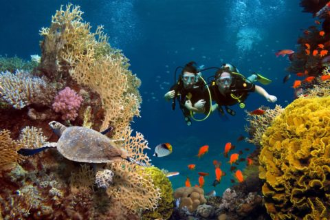
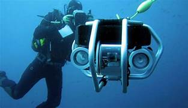

¿Cual es nuestra misión?

Nuestra misión es promover la preservación de la vida submarina y contribuir al desarrollo sostenible de
los ecosistemas marinos. Nos comprometemos a utilizar enfoques científicos y tecnológicos innovadores
para comprender, conservar y restaurar la biodiversidad submarina.
Trabajamos incansablemente para concientizar a la sociedad sobre la importancia de los océanos y mares
en nuestro planeta, destacando la interconexión entre la salud de los ecosistemas marinos y el bienestar
humano. A través de la educación, la investigación y la colaboración con comunidades locales, buscamos
fomentar prácticas sostenibles que permitan la coexistencia armoniosa entre las actividades humanas y la
vida submarina.

Nos esforzamos por desarrollar y promover tecnologías y prácticas amigables con el medio ambiente que
minimicen el impacto humano en los océanos. Además, abogamos por políticas y regulaciones que respalden
la conservación marina y la gestión sostenible de los recursos acuáticos.
Como equipo, estamos comprometidos con la creación de un futuro en el que las generaciones venideras
puedan disfrutar de la belleza y la diversidad de los océanos. Trabajamos juntos hacia un equilibrio
sostenible entre el desarrollo humano y la preservación de los valiosos ecosistemas submarinos,
reconociendo que la salud de los océanos es fundamental para la salud de nuestro planeta en su conjunto.
En SavingTheSea, estamos plenamente comprometidos con la preservación y
salvaguarda de la vida
submarina. Reconocemos la importancia crítica de los océanos para el equilibrio ecológico global, y
nos
comprometemos a desempeñar un papel activo en su protección. Nuestro compromiso se refleja en las
siguientes acciones:
- Investigación y Desarrollo Sostenible: Llevaremos a cabo investigaciones para comprender
y conservar
la biodiversidad marina en las áreas donde operamos. Buscaremos continuamente maneras de mejorar
nuestras prácticas para minimizar nuestro impacto ambiental y fomentar la sostenibilidad en
todas
las etapas de nuestras operaciones.
- Educación y Concientización: Nos esforzaremos por aumentar la conciencia pública sobre la
importancia de los ecosistemas marinos y la necesidad de su conservación. Implementaremos
programas
educativos y de concientización para nuestros empleados, socios comerciales y comunidades
locales.
- Colaboración con Organizaciones Ambientales: Estableceremos asociaciones estratégicas con
organizaciones líderes en conservación marina. Contribuiremos activamente a proyectos y
programas
que promuevan la salud de los océanos y participaremos en iniciativas de limpieza y protección
de
hábitats submarinos.
- Prácticas Comerciales Sostenibles: Adoptaremos prácticas comerciales que minimicen
nuestro impacto
ambiental, desde la gestión de residuos hasta la reducción del uso de plásticos. Buscaremos
constantemente oportunidades para mejorar nuestra ecoeficiencia y promover la economía circular.
- Transparencia y Rendición de Cuentas: Nos comprometemos a ser transparentes en nuestras
prácticas y
a rendir cuentas por nuestro desempeño ambiental. Publicaremos informes periódicos sobre
nuestras
iniciativas de conservación y los resultados obtenidos.
Nuestro Equipo
Contamos con un equipo diverso de expertos en biología marina, conservación, y sostenibilidad. Cada
miembro aporta su experiencia única para lograr nuestros objetivos comunes.
- Equipo de Investigación y Desarrollo Sostenible: Este equipo está dedicado a la
investigación de la biodiversidad marina en las áreas donde operamos. Trabajamos arduamente para
mejorar continuamente nuestras prácticas, minimizando nuestro impacto ambiental y promoviendo la
sostenibilidad en todas las etapas de nuestras operaciones.
- Equipo de Educación y Concientización: Nuestros expertos en educación ambiental
implementan programas dirigidos a nuestros miembros y a la comunidad en general. Buscamos
aumentar la conciencia pública sobre la importancia de los ecosistemas marinos y la necesidad de
su conservación.
- Colaboración con Equipos de Conservación Ambiental: Establecemos asociaciones
estratégicas con organizaciones líderes en conservación marina. Nuestro equipo colabora
activamente en proyectos y programas que promueven la salud de los océanos, participando en
iniciativas de limpieza y protección de hábitats submarinos.
- Equipo de Prácticas Comerciales Sostenibles: Este equipo se centra en la implementación
de prácticas comerciales que minimizan nuestro impacto ambiental. Desde la gestión de residuos
hasta la reducción del uso de plásticos, trabajamos juntos para mejorar nuestra ecoeficiencia y
promover la economía circular.
- Equipo de Comunicación y Transparencia: Nuestro equipo de comunicación garantiza la
transparencia en nuestras prácticas y rinde cuentas por nuestro desempeño ambiental. Facilitamos
una comunicación abierta dentro del equipo y con las partes interesadas para garantizar que
todos estén alineados con nuestros objetivos de conservación marina.